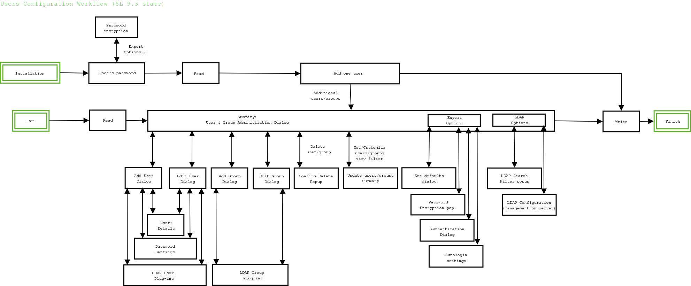

YaST2: Users configuration module
Features (SL 9.3)
Basic module abilities:
- add, remove and edit local users and groups
- add, remove and edit LDAP users and groups
- read NIS users and groups
- configure password encryption type
- configure authentication type
- edit defaults from /etc/defaults/useradd
User attributes:
- name
- password
- uid
- GECOS (fullname and other attributes)
- default group, additional group membership
- shell
- home directory
- password settings (warning limits, expiration date etc.)
- special attributes for LDAP users
Group attributes:
- name
- gid
- users
- password access
- special attributes for LDAP groups
TODO file
Implementation
YaST Users module consists from following subcomponents:
- Perl modules
- Users.pm
- UsersLDAP.pm
- UsersCache.pm
- UsersLDAP.pm
- YaPI/USERS.pm
- SCR agents
- SCR agent for reading and writing the main user/group config files
(e.g. /etc/passwd)
- SCR agent for reading and writing /etc/default/useradd config file
li>SCR agent for testing the password strength ("agent-crack")
- SCR agent for testing if the UIDs/usernames are unique ("agent-uid")
- User interface files (dialog behaviour definition and implementation)
Users.pm data structures and functions
Purpose of this module
- Read and write the settings using agents
- Store the settings in module variables
- Provide functions required by other components
- Provide functions tightly bound to the data it stores
- Provide other functions required by user interface
Data structures
map users
This structure gatheres informations of all users in the system.
(To be more precise, information of NIS and LDAP users could be
read later on demand, so just after Users::Read call, the map
describes the content of /etc/passwd config file). The map is
indexed by user type (local,system etc.), values are maps of each
type. The inner maps are indexed by UID, values are maps of users.
Such user map has the keys (user attributes, like 'uid' (= login name)
or 'home') and its values describing that user (see user_in_work
map).
Here is the example of 'users' structure, written in YCP:
$[
"local":$[
500: $[
"cn" :"Ha Ha Herman",
"uid" :"hh",
"uidnumber" :500,
"gidnumber" :100,
"homedirectory" :"/home/hh",
"userpassword" :"x",
"loginshell" :"/bin/bash",
"type" : "local",
"grouplist" : $[
"audio" : 1,
"video" : 1,
],
"modified" : "added",
"what" : "add_user",
],
],
"ldap": $[
5000: $[
"cn" :"LDAP user",
"givenname" : "LDAP",
"sn" : "user",
"dn" : "uid=ldap1,ou=people,dc=suse,dc=cz",
"uid" : "ldap1",
"uidnumber" : 5000,
"gidnumber" : 100,
"homedirectory" : "/ldap_homes/ldap1",
"userpassword" : "x",
"loginshell" : "/bin/bash",
"shadowexpire" : "0",
"shadowinact" : "-1",
"shadowlastchange" : "11984",
"shadowmax" : "99999",
"shadowmin" : "0",
"shadowwarn" : "7",
"type" : "ldap",
"grouplist" : $[
"audio" : 1,
"video" : 1,
"lgroup": 1
],
]
]
]
map groups
This structure describes all the groups (which means - as default
- the content of /etc/group config file). The map is indexed by
group type (local,system etc.), values are maps of each type. The
inner maps are indexed by GID, values are maps of groups.
Example of structure:
$[
"local":$[
500 :$[
"cn" : "users",
"gid" : 500,
"type" : "local"
"userlist" : $[],
"more_users" : $[
"hh": 1
],
]
],
"system": $[
1: $[
"cn" : "bin",
"gid" : 1,
"type" : "system"
"userlist" : $[
"daemon": 1
],
"more_users" : $[
"bin" : 1
],
],
]
]
map shadow
This is the map indexed by user type (local,system etc.), values
are maps of each type. The inner maps are indexed by username,
values are maps of user shadow settings. This map describes the
content of /etc/shadow file.
map useradd_defaults
This map contains information about default values, used for new
users. It describes /etc/default/useradd config file.
Example of structure:
$[
"group" : "500",
"home" : "/home",
"inactive" : "-1",
"expire" : "",
"shell" : "/bin/bash",
"skel" : "/etc/skel",
"groups" : "dialout,uucp,video,audio",
]
map user_in_work
Map of current user. The maps with the same structure are saved in
global "users" map as the values for UID keys. The map contains:
- real data entries
these which were read from the config file (/etc/passwd) or
other user repository (LDAP directory) and will be written
there at the end, like "gidnumber", "uidnumber", or "username".
- helper structures
these were generated from the "real" data and are stored in
the user map just as in some cache, like "grouplist"
(generated from "group" map), "org_home" (necessary for
moving home directory to new location), "type", etc.
Example of user_in_work structure:
$[
"cn" : "LDAP user",
"givenname" : "LDAP",
"sn" : "user",
"dn" : "uid=ldap1,ou=people,dc=suse,dc=cz",
"uid" : "ldap1",
"uidnumber" : 5000,
"gidnumber" : 100,
"homedirectory" : "/ldap_homes/ldap1",
"userpassword" : "x",
"loginshell" : "/bin/bash",
"shadowexpire" : "0",
"shadowinact" : "-1",
"shadowlastChange" : "11984",
"shadowmax" : "99999",
"shadowmin" : "0",
"shadowwarn" : "7",
"type" : "ldap",
"grouplist" : $[
"audio" : 1,
"video" : 1,
"lgroup": 1
],
]
Functions
boolean Users::ReadNewSet (string type)
Local and system users (groups) are always read as default in
Users::Read() function. ReadNewSet () function provides reading of
non-standard user (group) set (this currently means NIS or LDAP)
on demand. Function gets the connection to server where the sets
are stored (it could require user interaction) and generates
appropriate ("nis" or "ldap") structures for both users and groups.
boolean Users::AddUser (map data)
Initialize data structure for new user. As a parameter, gets
data for new user - the map can be empty (just to fill in
defaults) or almost complete (for example after user added the
details via UI) - in this case use the map of user_in_work
format. Function chooses new UID
(if not given), fills defaults (from useradd structure), and
copies given data to new user map.
boolean Users::SelectUser (integer uid)
Finds the user identified by its UID and copies its data from
global users map to current user map (user_in_work).
boolean Users::SelectUserByName (string username)
Finds the user identified by its name and copies its data to
current user map.
boolean Users::EditUser (map data)
Initializes current user map (user_in_work) for editing. Copies
the original (not yet edited) data to 'org_user' submap.
Additionaly, loads the data not yet contained in current user map
(like "shadow" values or additional groups for NIS/LDAP users)
from the global structures to the user_in_work map. Initialization
is the one type of usage of Edit function, in such case its
parameter could be an empty map.
In the second type of usage, function updates current user map
using the values in the given parameter, which is a map with the
same format as the user_in_work, but
containing only the entries with the changed values.
string Users::CheckUser ()
Function does all necessary checks to ensure that new or just
edited user can be written (for example the checks for possible
UID/username duplicates, home directory existence etc.). Returns
error message of the first check that failed.
boolean Users::CommitUser ()
Saves the current user map to global structures and updates all
affected structures. Adapts the (cache) lists of all usernames,
uid's, home directories; adapts the affected groups. Cache
structures are adapted in UsersCache::CommitUser() function.
Takes care of special cases, e.g. when username or uid is changed,
because both are used as the indexes in some global structures.
All possible problems should be resolved in check functions before
CommitUser is called, so theoreticaly this function should never
fail.
The workflow

The files
For more, see developer's documentation.